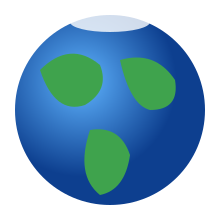

Земля — третя планета від Сонця і єдина відома планета, на якій є життя. Вона розташована на відстані близько 150 мільйонів кілометрів від Сонця. Саме така відстань дозволяє воді залишатися рідкою.
Приблизно 71 відсоток поверхні Землі вкриває вода: океани, моря, річки та озера. Тому з космосу наша планета здається блакитною. Решту займають материки та острови.
Земля робить повний оберт навколо своєї осі за одну добу, а навколо Сонця — приблизно за 365 днів. Через нахил земної осі на планеті змінюються пори року: весна, літо, осінь і зима.
У Землі є один природний супутник — Місяць. Він впливає на припливи й відпливи в океанах і завжди повернутий до нас одним і тим самим боком.
Детальніше про сусідню планету читайте на сторінці Марс.